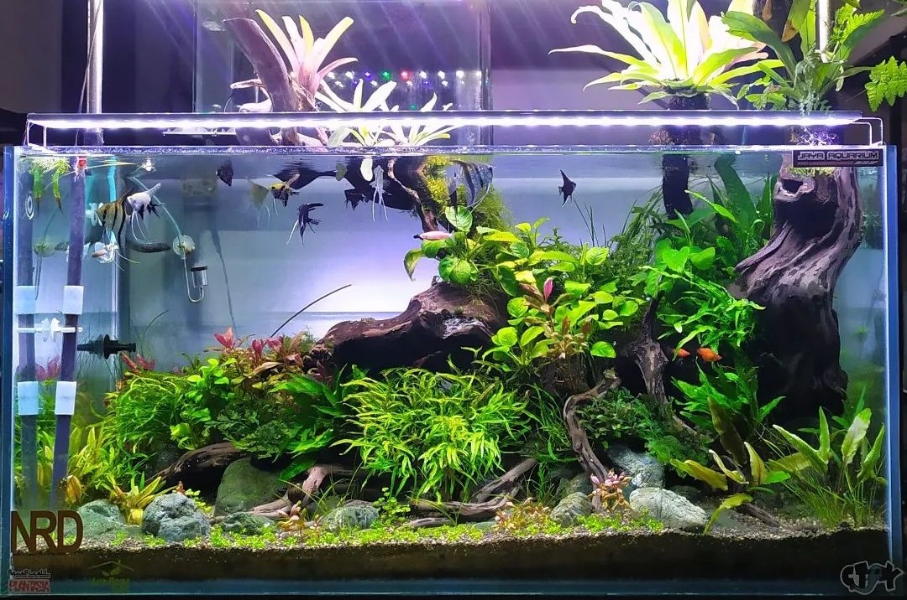
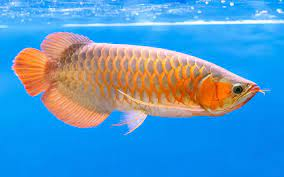
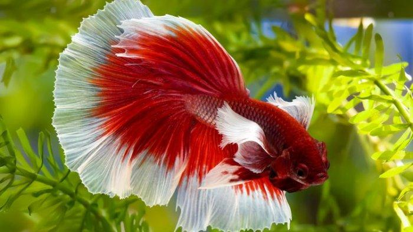
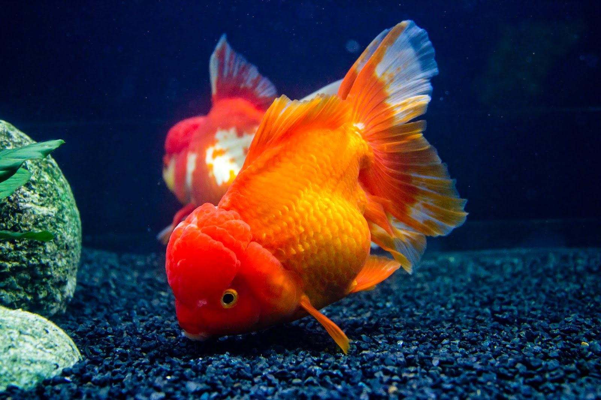
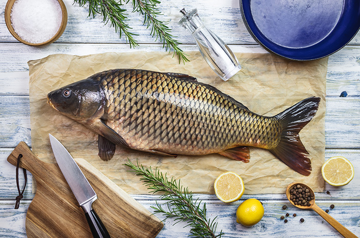
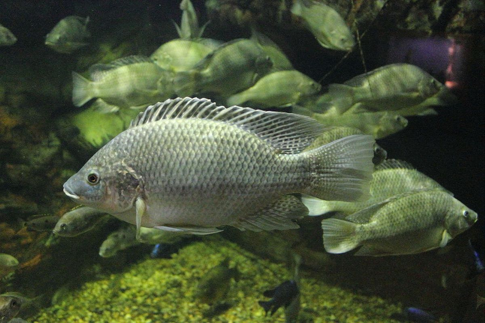
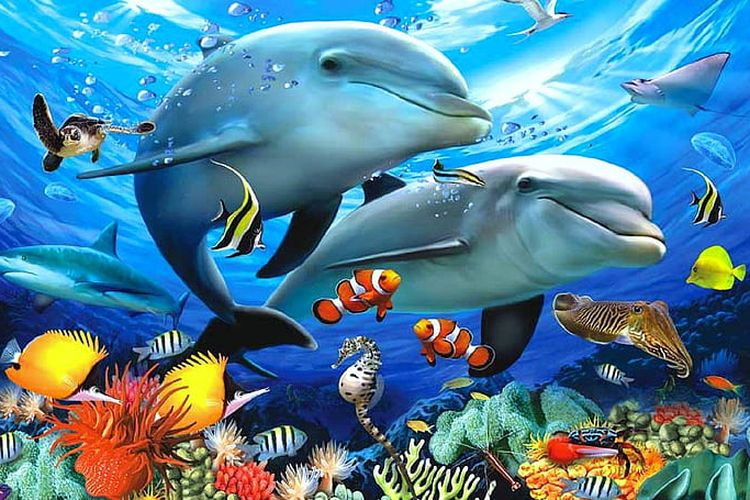
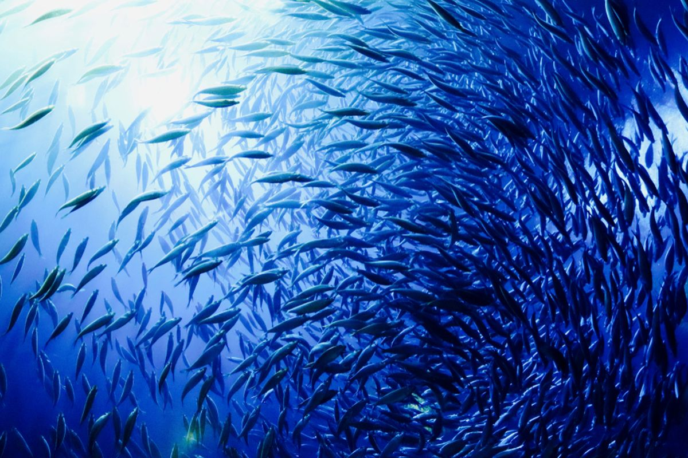

Ikan adalah anggota vertebrata poikilotermik (berdarah dingin) yang hidup di air dan bernapas dengan insang. Ikan merupakan kelompok vertebrata yang paling beraneka ragam dengan jumlah spesies lebih dari 27,000 di seluruh dunia.
Secara taksonomi, ikan tergolong kelompok paraphyletic yang hubungan kekerabatannya masih diperdebatkan; biasanya ikan dibagi menjadi ikan tanpa rahang (kelas Agnatha, 75 spesies termasuk lamprey dan ikan hag),
ikan bertulang rawan (kelas Chondrichthyes, 800 spesies termasuk hiu dan pari), dan sisanya tergolong ikan bertulang keras (kelas Osteichthyes). Ikan dalam berbagai bahasa daerah disebut iwak, jukut.
Ikan Air Tawar

Ikan air tawar adalah jenis ikan yang hidup di air tawar di kolam, sungai, dan danau dengan salinitas air 0,05%. Sebanyak 41 persen dari jumlah spesies ikan diketahui hidup di air tawar.
Dalam banyak hal, lingkungan air tawar berbeda dengan lingkungan air laut, dan yang paling membedakan adalah tingkat salinitasnya.
Untuk bertahan di air tawar, ikan membutuhkan adaptasi fisiologis yang bertujuan menjaga keseimbangan konsentrasi ion dalam tubuh.
Hal ini karena spesiasi yang cepat yang menjadikan habitat yang terpencar menjadi mungkin untuk ditinggali
Jenis Ikan Air Tawar

Ikan Arwana

Ikan Cupang

Ikan Koki

Ikan Mas

Ikan Mujair
Ikan Laut

Ikan laut atau Ikan air asin adalah spesies ikan yang hidup di dalam air laut.
Berbeda dengan ikan air tawar yang menghendaki lingkungan hidup dengan kadar garam yang lebih rendah daripada kadar garam dalam cairan tubuhnya,
ikan laut dapat menyesuaikan diri terhadap lingkungan yang memiliki kadar garam yang lebih tinggi dibandingkan dengan kadar garam dalam cairan tubuhnya.
Ikan laut mempunyai cairan tubuh berkadar garam lebih rendah dibandingkan kadar garam di lingkungannya.
Ikan laut Dalam

Ikan-ikan yang hidup di laut dalam memiliki tubuh yang berukuran kecil. Namun, bagian rahangnya berukuran besar dan dapat terbuka lebar.
Ikan laut dalam juga dapat mencerna semua jenis makanan karena memiliki perut yang lentur. Makanan dari ikan-ikan laut dalam adalah sesamanya ikan laut dalam dan bangkai.
Perilaku memangsa ini disebabkan oleh pasokan makanan yang sangat sedikit. Lingkungan hidup ikan-ikan laut dalam sangat gelap dan dingin.